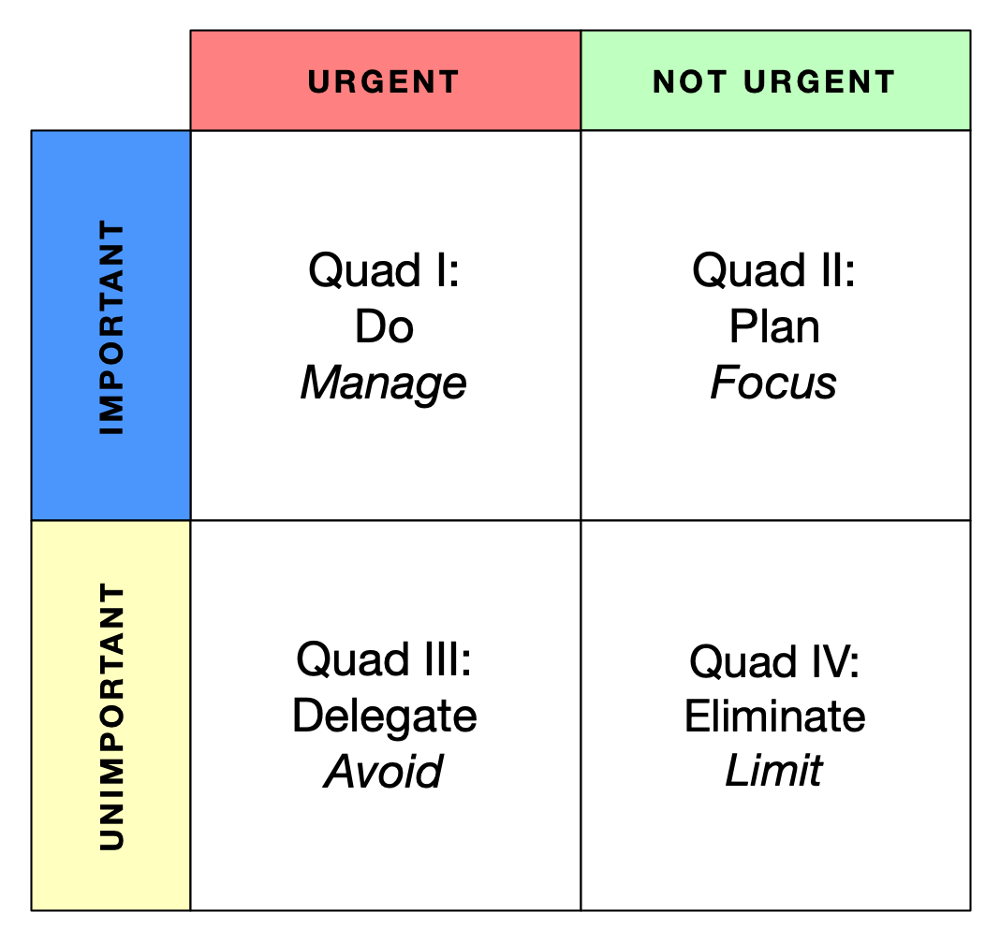

The Urgent vs. Important Matrix

This is a tool to help manage the allocation of resources to tasks.
You will also sometimes see this referred to as the Eisenhower Matrix, and will sometimes see it credited to Stephen Covey, who helped to popularize it.
The four quadrants of the model are formed along the two dimensions of importance and urgency.
Let’s review what we mean by the two key terms here.
urgent: requiring immediate action or attention; this may be in response to a critical situation, or to an externally imposed deadline or expectation.
important: of great significance or value; likely to have a profound effect on success, survival, or well-being.
So, with these definitions in mind, what can we recommend for tasks that fall into each of the quadrants?
Quad I: Important and Urgent – In the short term, you must do these items first; in the bigger picture, you should manage your situation so that you do not spend all of your resources in this quadrant.
Quad II: Important but Not Urgent – In the short term, you should make plans to work on these items; at some point, you must be able to focus necessary resources on these items without constant interruptions from more urgent items.
Quad III: Urgent but Not Important – In the short term, try to find someone else to take such an item on; in the bigger picture, such items should be avoided, since the urgency would seem to be contrived or imagined.
Quad IV: Neither Urgent Nor Important – Eliminate these items whenever you can; if you can’t entirely eliminate them, then at least limit them.
Of course, the typical challenge here is to limit the volume and frequency of urgent items in order to focus necessary resources on the items that are important but not urgent.